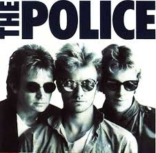
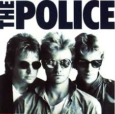

The Police
 

I The Police sono un gruppo musicale che si è formato a Londra nel 1977
Membri del gruppo:
- Gordon Matthew Sumner, anche detto Sting
- Andy Summers
- Stewart Copeland
Gli album più famosi sono
| Synchronicity | 17 giugno 1983 |
| Reggatta de Blanc | 5 ottobre 1979 |
| Outlandos d´Amour | 2 novembre 1978 |
cliccando su questo link potrete ascoltare una delle loro canzoni più ascoltate